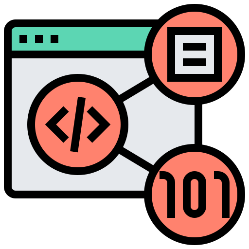

BLOC 1 |
BLOC 3 |
BLOC 3 |
- Protéger les données à caractère personnel
- Préserver l'identité numérique de l’organisation
- Sécuriser les équipements et les usages des utilisateurs


En seconde, j'intégre le lycée Roland Garros, c'est ainsi que j'apprends le langage Python
Pour la première, j'ai choisi de passer un bac général orienté scientifique(Sciences ingénieur)
Pour la terminale, j'ai choisi la spécialité ISN(Informatique, et Sciences du numérique) où on a eu des stages avec la WebCup(#webcup) et où Python était le langage utilisé dans la plupart des cours. On a beaucoup vu aussi l'algorithmie
Pour le bac on devait créer un projet, le mien était de faire un FlappyBird en Python avec PyGame
Resumé: Le BTS SIO(Service Informatique aux organisations) est un Brevet de technicien supérieur sur 2 années. Ce BTS SIO au Lycée de Bellepierre(Lycée auquel j'ai effectué ce parcours) propose des altérnances(contrat d'apprentissage avec des entreprises). J'ai préféré choisir une scolarité sans alternance. Pour réussir le BTS SIO, il faut préparer ses épreuves et passer un minimum de 12 semaines en entreprise(sous forme de stage pour les étudiant non-altérnants)
Il existe deux spécialité: SISR(Solutions d'infrastructure, Systèmes et Réseaux) et SLAM(Solutions Logicielles et Applications Métier)
Il y a eu aussi plusieurs ateliers professionnels: travail en équipe de 4 à 5 sur un projet factice. Le but est de montrer aux étudiants le travail en groupe et la relation client/salarié(ou prestataire)
J'ai choisi l'option SLAM
Savoir faire une veille technologique/informatique
Savoir installer un CMS
Savoir installer un serveur Web
Savoir installer un serveur FTP
Savoir utiliser une méthode AGILE
Savoir faire une sauvegarde et une restauration automatique
Web Master dans une agence immobilière
Créer un site web avec un CMS(WordPress avec des modules), faire une documentation détaillé pour une utilisation facile
Formation(optionnel) des membres de l'agence, tutoriels en vidéos, démonstration, etc...
Voir le site de l'agence
Savoir reprendre un site web déjà créer sous format MVC(Modèle-Vue-Controlleur)
Savoir installer un framework
Savoir utiliser Symfony
Savoir utiliser Doctrine avec Symfony et savoir utilser la base de Composer
Une des facettes d'un Data Scientist - Automatisation de fichier pour les filtrer et les normer et receuillir des nouvelles données exploitable
Voir le site de l'entreprise
Parcours HTML & CSS OpenClassrooms "Apprenez à créer votre site web avec HTML5 et CSS3"
Parcours Php & MySQL OpenClassrooms "Concevez votre site web avec PHP et MySQL"
Parcours Root-Me
PIX